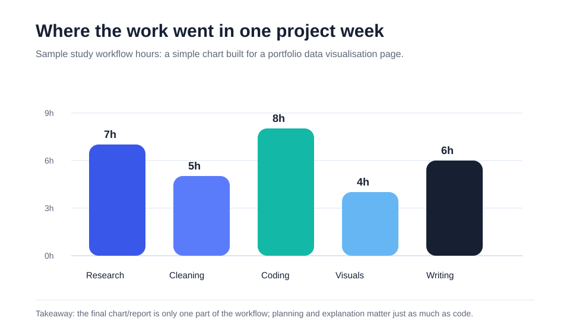

Main takeaway
A strong data project is not just about producing a graph. It is about making the graph support a clear story.
A simple visualisation showing how time can be distributed across different stages of a data project.

The chart breaks one project week into five activities: research, data cleaning, coding, visualisation, and writing. Coding takes the largest share, but the chart also shows that the final output depends heavily on planning, cleaning, and explanation.
When people see a finished report, they often only notice the final chart or written answer. In reality, a lot of the work happens before that: deciding what question to answer, preparing data, checking whether the output makes sense, and explaining the result clearly.
A strong data project is not just about producing a graph. It is about making the graph support a clear story.
I used a simple bar chart because the comparison is direct. The viewer can immediately see which parts of the workflow took more time.